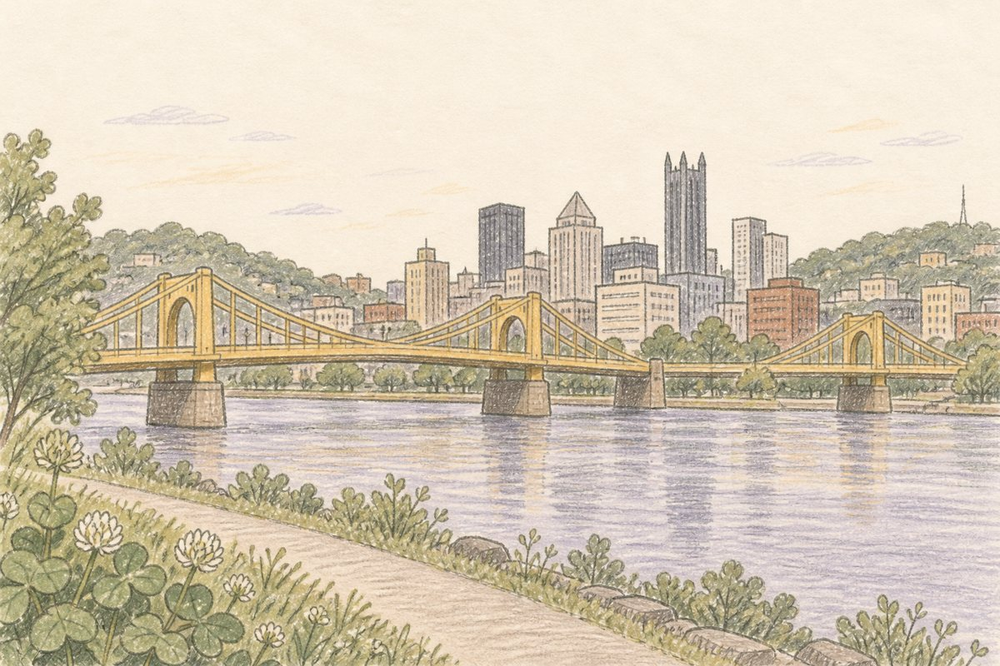
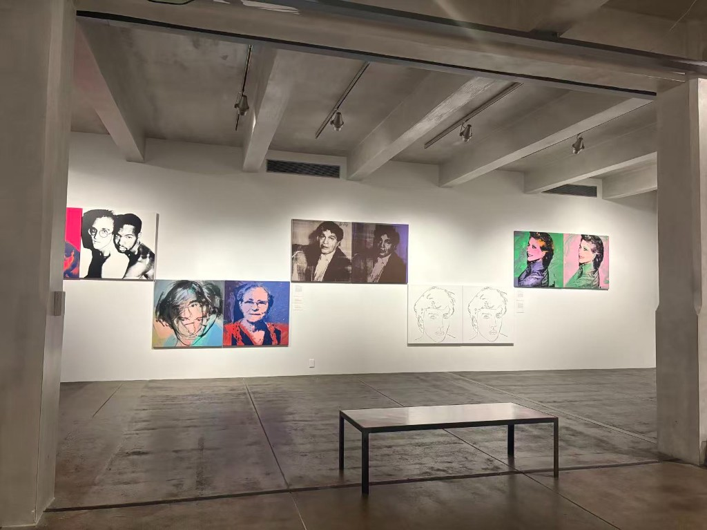

The plan
ok so phipps then warhol??
wait is the cathedral open sat
idk i screenshotted a blog
send it
Fourteen screenshots, one Google Doc nobody opened again, and a group chat named PGH!!!
A travel diary that writes itself
You took 400 photos and remember about six of them. Pinlog puts every trip on a map, catches your photos as they happen, and hands you back a hand-drawn journal and a little film in your own words.
The problem
Not badly. Just… nowhere. The plan lived in a group chat, the photos went into the roll, and the video you were going to make is still "going to be made."
ok so phipps then warhol??
wait is the cathedral open sat
idk i screenshotted a blog
send it
Fourteen screenshots, one Google Doc nobody opened again, and a group chat named PGH!!!
412
photos. Zero captions. Three of the same fern. Which greenhouse was the fern in? Was that Saturday? Who took the one with the rollercoaster?
Make a trip video this weekend
Make a trip video this month
Make a trip video
You had the footage. You had the feelings. You did not have four hours and a video editor.
So we built the thing we wanted on the way home: a diary that keeps up with the trip, instead of waiting for you after it.
One weekend, the Pinlog way
Pittsburgh, two days, four friends, one app. Everything below happened; the reel at the top is what came out the other end.
Friday, 11 pm, on the couch
Pins dropped onto the map one by one, each with a reason: the Cathedral for the view, Phipps for the glasshouse, the Warhol because it's the Warhol. Every pin was checked against a real map before it landed, so nothing was made up.
Tap a pin → why this pin · verified on OpenStreetMap
The plan, as a route on paperSaturday, 10:40 am
One of us took the classic shot of the Cathedral and dropped it in. Pinlog read where and when it was taken and slid it onto the right pin before we crossed the street. No albums, no sorting, no "which one is this."
"60 m from the Cathedral · within your window" · a photo with no GPS just waits in the tray Cathedral of Learning · landed on its pin
Cathedral of Learning · landed on its pinSaturday, 2 pm, inside the glasshouse
"$3 extra for the fern room, worth it." That was the whole note. When the film was made on Sunday, the narration said exactly that, and pointed at the note it came from. It never says anything we didn't.
Narration cites the note it came from, right under the playerSunday, 9 pm, back home
Title, a flyover from the Cathedral to Phipps, our photos with a slow drift, a voice reading our own notes, and an outro that draws the whole route: 12 km, 9 places, 16 photos. The scrapbook pages were already waiting under each pin.
Ask the journal "summarize my day" and it answers from your notes only
The Warhol · Day 1, on the scrapbook pageThe promise
No stock footage. No invented weather. No "vibrant city known for its bridges." Your photos, your notes, your route, in your words.

Pinlog is a HackCMU 2026 project. Come find us and plan a trip on your own phone in under a minute, then watch it become a film before you leave the table.